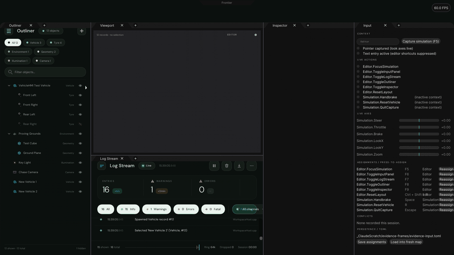
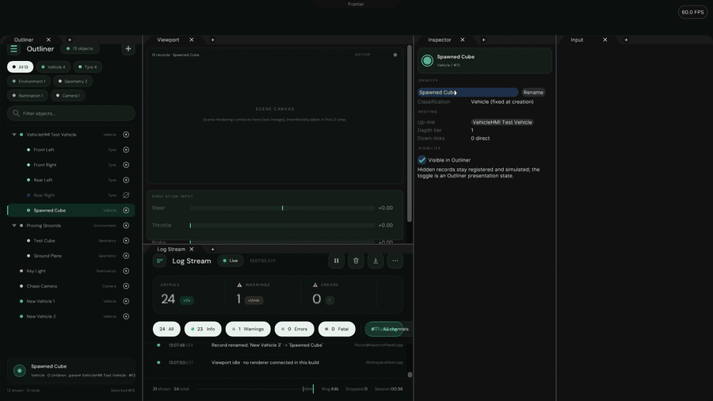
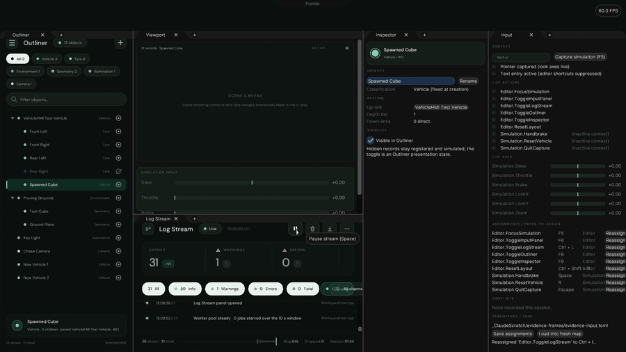
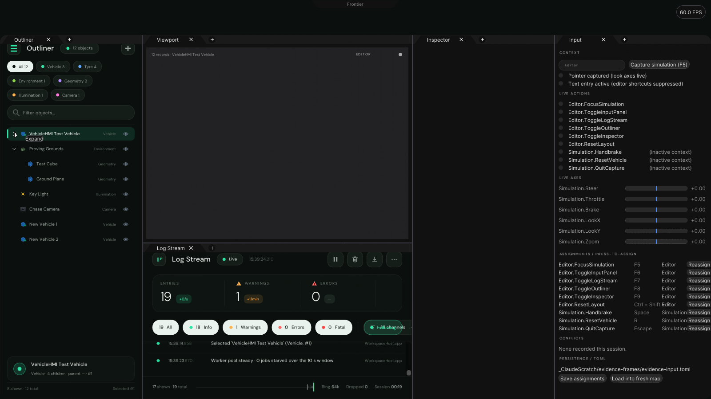
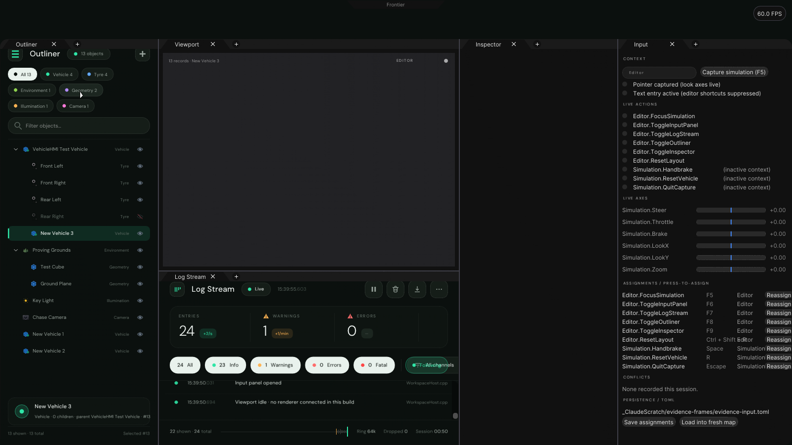
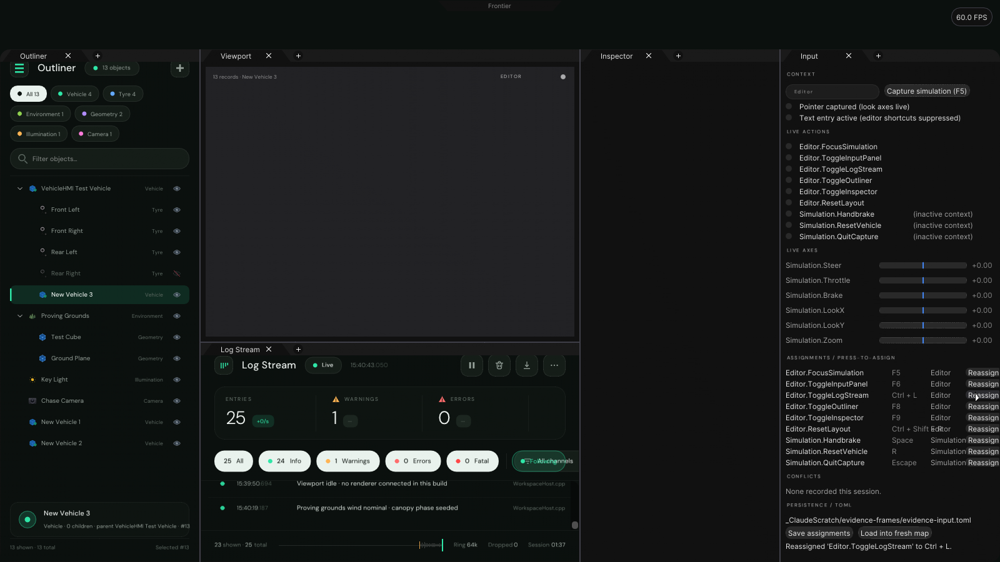
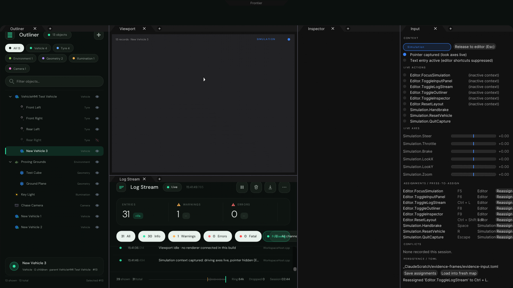
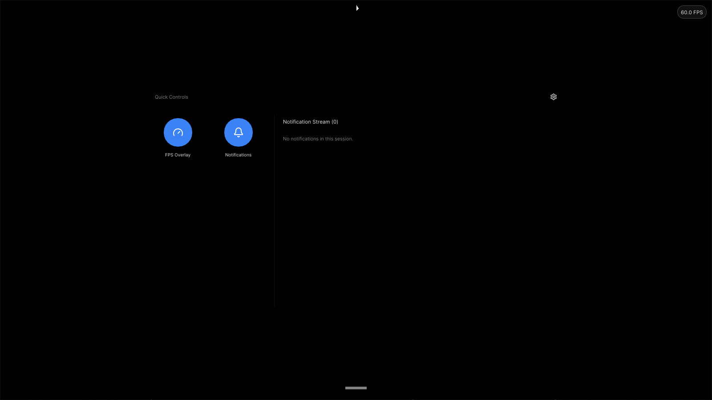
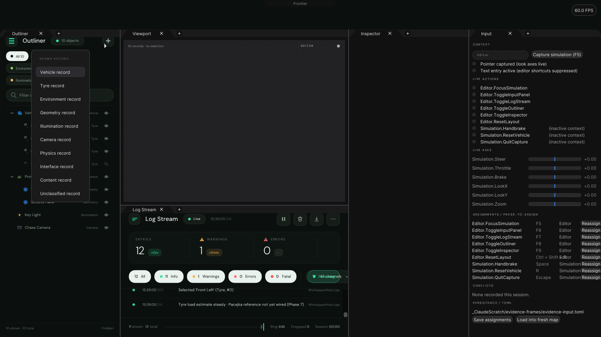

Interaction evidence
Scripted pointer/keyboard driving the actual panels (learn-by-effect, replayed on record). The white arrow is the harness cursor.

OutlinerRow selection, chevron collapse/expand of the vehicle subtree, text filter, spawn from the + menu. Per-classification icons throughout.

Docking + InputF6 toggling the Input panel, press-to-assign rebinding to Ctrl+L, Ctrl+L toggling Log Stream, splitter drags, log pause.

Notch + SimulationNotch click opens the Control Centre, quick tile, dismissal; canvas click captures the Simulation context, W/A/D drive the axes, Esc releases.
Stills
Full-resolution captures from the same run.

Collapsed subtreeChevron folded: tyres hidden, counts intact (“8 shown · 12 total”).

Input panelAppearance theme (blue accent): contexts, live actions/axes, assignments.

After press-to-assign
Editor.ToggleLogStream rebound to Ctrl+L through the live map.
Simulation capturedBlank viewport surface holding the Simulation input context.

Control CentreNotch sheet open (headless raster: the frosted backdrop is a Vulkan effect).

Spawn menuOne record per classification, created under the selection.
At a glance
Panels
- Notch — Control Centre (appearance, quick tiles)
- Outliner — scene tree, icons, folds, filters, spawn
- Viewport — blank except its header (by request)
- Log Stream — retained engine panel, unchanged
- Inspector — blank for now
- Input — shared input layer test bench
Default keys
- F5 capture simulation · Esc release
- F6 Input · F7 Log Stream
- F8 Outliner · F9 Inspector
- Ctrl+Shift+R reset layout
- W/A/S/D drive · Space handbrake (simulation)
Verification
- Evidence harness: 0 failures
- Input validation: 43 / 43 checks
- Log Stream exhibit tests: 2 / 2
- Theming follows Control Centre Appearance live